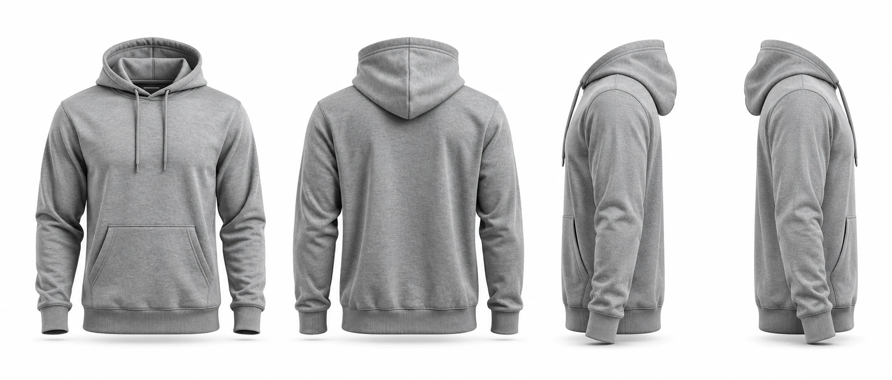

2
Colegial
Estilo universitario clásico, juvenil y con orgullo

WESTHILL
UNIVERSIDAD
UW
Westhill
E Q U I P O W E S T H I L L
FRENTE
ESPALDA
PERFIL IZQUIERDO
PERFIL DERECHO
Frente:
WESTHILL en arco, letras de bloque.
Espalda:
UW grande con "Westhill" en letra manuscrita.
Manga:
huella de caracal.
Tintas:
2 (marino y azul) + contorno blanco.